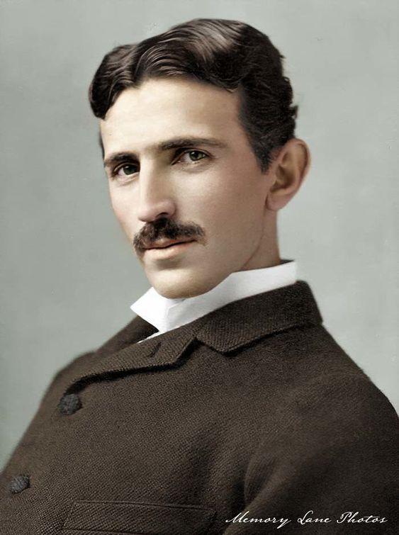

Nikola Tesla
1856 - 1943
Father of Alternating Current (AC) Electricity
Nikola Tesla, born on July 10, 1856, in Smiljan (now Croatia), was a Serbian-American inventor and electrical engineer best known for developing the alternating current (AC) electrical system, which became the global standard for power distribution. His notable inventions include the Tesla coil, essential for wireless communication, and innovations in electromagnetism that laid the groundwork for radio technology. Tesla's visionary ideas extended to concepts like wireless energy transmission and renewable energy, significantly impacting modern electrical engineering. He passed away on January 7, 1943, but his legacy continues to inspire innovation and technology today.
Biographies
- My Inventions: The Autobiography of Nikola Tesla
- The Inventions, Researches, and Writings of Nikola Tesla
- The Problem of Increasing Human Energy
- Experiments With Alternate Currents Of High Potential And High Frequency